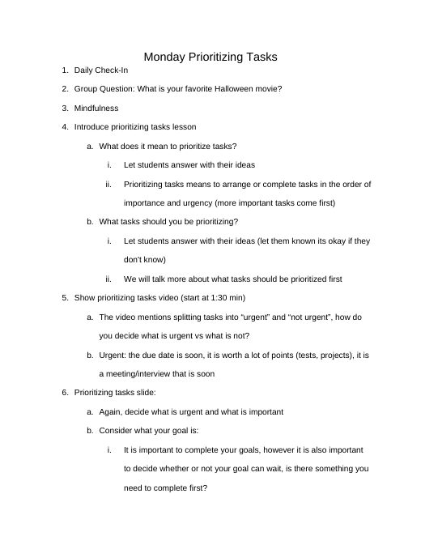
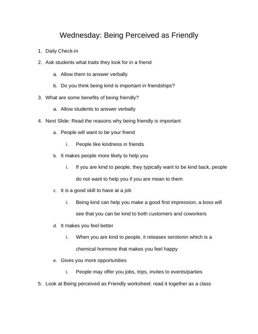

Grace Dittman
Block 2 Math
Block 3 Math
ESS
Lesson Plans
Résumé
Photos
Search
Home
›
ESS
›
weeks 8+9
›
Lesson Plans
Lesson Plans
← Activities
Slides →

Prioritizing Tasks
10_19-10_26 Prioritizing Tasks.docx
Dealing with Disappointment
10_20-10_27 Dealing with Disappointment.docx

Being Perceived as Friendly
10_21-10_28 Being Perceived as Friendly.docx
Asynchronous Day Plan (PSAT day, all three classes)
Async Lesson Plans.docx
ESSFridayRoutineLessonPlan
ESSFridayRoutineLessonPlan.docx
ESSThursdayLessonPlan
ESSThursdayLessonPlan.docx
← Activities
Slides →